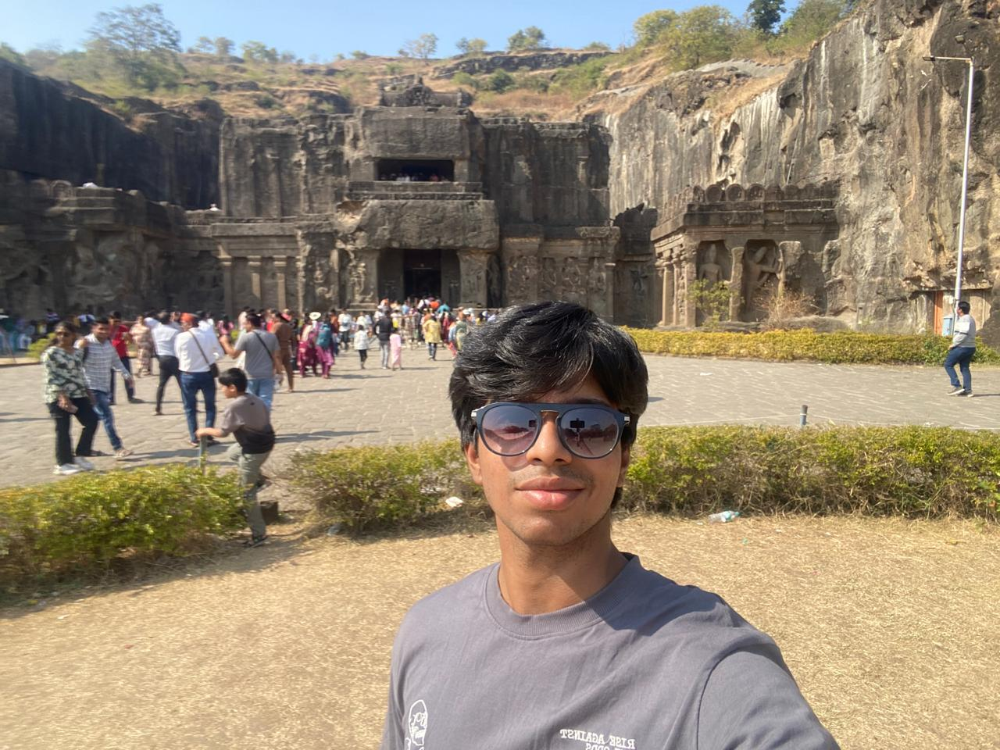

Experimenting with side projects
I enjoy taking small ideas and turning them into mini applications, dashboards, and tools to learn new tech stacks in a playful way.

Hey, I’m Aryan 👋
I’m a growth-driven learner who loves turning fundamentals into real projects and real impact. I break problems down, experiment, and learn by doing instead of just memorizing.
I’ve explored web development, data analysis, and core CS concepts, pushing myself to stay consistent even when progress feels slow. Discipline, self-improvement, and long-term thinking guide how I work and grow.
I believe meaningful growth comes from persistence, honest self-assessment, and the willingness to rebuild when things don’t go as planned.
I enjoy taking small ideas and turning them into mini applications, dashboards, and tools to learn new tech stacks in a playful way.
Whether it’s exploring datasets or building quick visualizations, I like finding patterns and stories hidden inside numbers.
I often read about productivity, long-term thinking, and discipline, then reflect on how to apply those ideas in my own life.
I love understanding how things work at a low level, then using that knowledge to design clean, reliable systems and user experiences.
My favorite way to learn is to ship real projects, face bugs, iterate, and continuously improve instead of chasing shortcuts.
I am driven by the idea of compounding progress: small daily improvements that add up to something powerful over time.
Built a responsive student dashboard with tasks, mood tracking, and smooth UI animations using HTML, CSS, and JavaScript.
Web Dev JavaScriptCompleted IBM data-science-related certifications, working on hands-on labs with data cleaning, visualization, and basic ML flows.
Data Science IBMExplored core CS concepts and coding exercises, focusing on writing clear, well-structured solutions instead of only chasing speed.
Core CS DSAI currently serve as the Junior Deputy Secretary of the Sports Council, where I assist in planning and coordinating sports events, managing teams, and handling official communication.
This role has helped me develop strong public speaking, leadership, and coordination skills, along with confidence in representing the council during meetings and events.
Leadership Public Speaking Team Management
Social Life
Collaboration
I enjoy working in teams where everyone shares feedback openly, supports each other, and isn’t afraid to experiment with new ideas.
Communities
I like engaging with tech and student communities, learning from peers, and contributing wherever I can add value.
Offline balance
Outside screens, I value meaningful conversations, walks, and time to reset so I can come back to work with more clarity and energy.